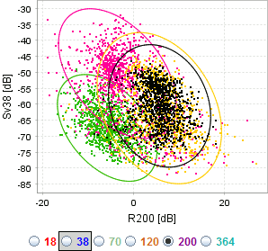

This view shows a scatter plot of the selected regions.

The vertical axis in the plot corresponds to the frequency shown in the echogram. The horizontal axis is selected by using the radio button below the plot.
The black point cloud is the selected regions. The coloured point clouds are mapped KORONA categories, configured in [Survey configuration - Acoustic categories].
The number of points in the point cloud and the size of the ellipsis are parameters configured in the categorization library.